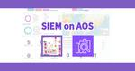
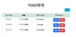
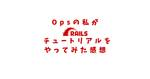
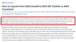
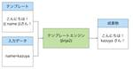
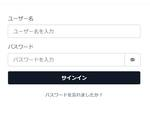
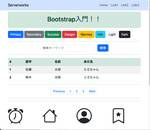
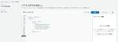
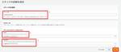
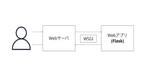

サーバーワークスエンジニアブログ
https://blog.serverworks.co.jp/
クラウド専業インテグレーター・サーバーワークスの中の人があらゆる技術についてお届けします。
フィード
Amazon SESをプライベートサブネットからのみ利用したい
サーバーワークスエンジニアブログ
こんにちは。 エンタープライズクラウド部の本田です。 本記事はAmazon SESへのアクセスをプライベートサブネットからのみに限定したいと考えている方向けの内容となります。 はじめに 構成図 設定内容 プライベートサブネットからAmazon SESへのアクセス経路の設定 Amazon SESのIDへのアクセス制御 SMTPユーザーへのアクセス制御 動作確認 プライベートサブネット内のEC2インスタンスからのメール送信 インターネットからのメール送信 さいごに はじめに 今回、既存のEメール送信ソリューションからAmazon SESへの移行案件を担当する機会がありました。 そのなかで、プライベ…
13時間前
Amazon SESの送信元IPアドレスを固定化する
サーバーワークスエンジニアブログ
こんにちは。 エンタープライズクラウド部の本田です。 本記事はAmazon SESで送信元IPアドレスの固定化を検討している方向けの内容となります。 結論、Amazon SESで送信元IPアドレスを固定化することは可能ですが、基本的には送信元IPアドレスの固定化を運用でカバーできないかを先に検討することをおすすめいたします。 はじめに SESの送信元IPアドレス 専用IPアドレスの目的 専用IPアドレス (標準) を設定するための検討事項 IPアドレス個数 IPウォームアップ 専用 IP アドレス (標準) のウォームアップ まとめ はじめに 今回、既存のEメール送信ソリューションからAmaz…
13時間前

SIEM on Amazon OpenSearchでできたリソースを見てみよう！【SIEM on AOSを1から学ぶ！第三弾】
サーバーワークスエンジニアブログ
「漠然とデータを採っているが活用できていない」「ログ分析の手間を減らしたい」… シリーズ第三弾では、実際にSIEM on AOSでどんなリソースが作られどう動くかのアーキテクチャを解説します。 はじめに 結論 作られたものを確認しよう OpenSearch S3 Lambda SQS SQSを有効化する方法 EventBridgeルール・StepFunction・CloudWatchアラーム SNS IAMロール KMS Stepfunction パラメータストア まとめ はじめに 図解推進委員会の垣見（かきみ）です。 SIEM on AOSを1から学ぶ！ブログシリーズ第三弾です。第一弾では概…
16時間前
SIEM on Amazon OpenSearchのデプロイ方法とパラメータ徹底解説【SIEM on AOSを1から学ぶ！第二弾】
サーバーワークスエンジニアブログ
「漠然とデータを採っているが活用できていない」「ログ分析の手間を減らしたい」… シリーズ第二弾では、実際にSIEM on AOSをデプロイしてみましょう。躓きやすいポイントとパラメータも細かく解説します。 はじめに やること 準備・注意事項 作成 CloudFormation作成手順 ClourFormationステップ1, 2, 3, 4 ステップ1. スタックの作成 ステップ2. スタックの詳細 スタック名を提供 Initial Deployment Parameters Basic Configuration Log Enrichment - optional Advanced Conf…
1日前

【Webアプリ作成の入門】Python + Flask + Bootstrap + DynamoDB
サーバーワークスエンジニアブログ
こんにちは。AWS CLIが好きな福島です。 はじめに インフラエンジニアのキャリアがメインの私が社内でPythonを使ったアプリ開発の学習をする機会があったため、先日から学んだことをアウトプットしています。 今回は以下の技術を活用し、TODO管理ができるWebアプリを作ってみたいと思います。 Python プログラミング言語 Flask Webアプリフレームワーク Jinja2 テンプレートエンジン Bootstrap フロントエンドツールキット DynamoDB AWSのマネージドなNoSQLサービス 各技術の入門に関するブログも書いているため、ご興味ある方は以下もご確認ください。 はじめ…
1日前
何ができるの？SIEM on Amazon OpenSearch Service【SIEM on AOSを1から学ぶ！第一弾】
サーバーワークスエンジニアブログ
「漠然とデータを採っているが活用できていない」「ログ分析の手間を減らしたい」… このようなお困りごとを解決してくれるSIEM on AOSは何ができて、何が良いのか？図解してみました。 はじめに SIEM on Amazon OpenSearchとは？ 概要 どんな人向け？ どういうもの？ SIEMとは OpenSearchとは SIEM on Amazon OpenSearchとは 構成図 何ができるの？基本機能の紹介 Discover：イベント一覧・検索 Visualize：図表の作成 Dashboards：Visualizeの一覧 アラート機能 その他 何が良いの？ トラブルシューティン…
2日前
IAM Identity Center のユーザでAWS Client VPN を利用する（SAML ベースのフェデレーション認証）
サーバーワークスエンジニアブログ
こんにちは、近藤（りょう）です！ AWS Client VPNを相互認証（証明書ベース）で導入することは、スタートアップとしては簡単です。しかし、証明書の管理や作成には専用の環境が必要となり開発ベンダーごとに証明書を発行する必要がある場合、運用が煩雑になる可能性があります。証明書の数が増えると、更新作業の負担も大きくなります。 そこで、今回は AWS Client VPNでフェデレーション認証を行い、IAM Identity Centerを用いて認証を一元管理する方法をご紹介します。この方法で、証明書の管理や運用の手間を軽減し、効率的に認証管理を行うことができます。 今回の構成 前提 管理アカ…
3日前
【Cloud Automator】ジョブ実行ログの検索条件が追加され、CSV形式でのダウンロードができるようになりました
サーバーワークスエンジニアブログ
概要 Cloud Automatorで下記の二つが行えるようになりました。 ジョブの実行開始日時を指定して実行ログを検索 CSV形式で実行ログをダウンロード これまで実行ログ一覧では「グループ」や「結果」、「ジョブ名」を指定した検索が可能でしたが、新たにジョブの実行開始日時も指定できるようになりました。 また実行ログをCSV形式でダウンロードできるようにもなりました。 これは一覧に表示されている実行ログをCSV形式のファイルとしてダウンロードできる機能です。一度にダウンロードできる実行ログは10,000件までとなっています。 詳細はこちらのマニュアルをご覧ください。 新たに追加された機能 〜実…
3日前

Opsの私が Ruby on Rails チュートリアルをやってみた感想
サーバーワークスエンジニアブログ
こんにちはマネージドサービス部 大城です。 飛行機で時間があったので、最近勉強したRuby on Rails チュートリアルの感想を書きます。 私はOpsの仕事をしていて、AWS環境でインフラ屋さんをしながらNew Relic、Datadog、Zabbixとたわむれています。 普段コードを書くことはあまりないのですがRuby on Rails（以下Rails）チュートリアルをやってみました。 Railsとは Railsチュートリアルとは きっかけ 私のRuby歴 学習環境 第1章 から 第3章 まで ざっくりとした内容 感想 Model-View-Controller（MVC） テスト駆動開発…
4日前
AWS SDK for Python (Boto3)を使って、DynamoDBを操作する
サーバーワークスエンジニアブログ
こんにちは。AWS CLIが好きな福島です。 今回は、AWS SDK for Python (Boto3)を使って、DynamoDBを操作してみたいと思います。 参考情報 テーブルの作成(create_table) アイテムの追加(put_item) アイテムの取得(get_item) アイテムの更新(update_item) アイテムの削除(delete_item) 複数アイテムの一括追加(batch_write_item) クエリ操作(query) Scan操作(scan) 1M以上のデータ取得 1M以上のデータを取得するサンプルコード Queryで1M以上のデータを取得するサンプルコード…
4日前
【Cloud Automator】告知: ジョブワークフローの新機能導入に伴い、先頭ジョブの作成ができなくなります
サーバーワークスエンジニアブログ
近日中に予定している Cloud Automator のリリースにおいて、ジョブワークフローの先頭ジョブに代わる「ワークフロートリガージョブ」を新たに導入いたします。 従来の先頭ジョブではトリガーとアクションを同時に設定していましたが、新たに導入するワークフロートリガージョブではトリガーのみを設定し、アクションは後続ジョブで設定します。 トリガーとアクションを分離することによって、ジョブワークフロー内のジョブの順番を簡単に変更できるようになります。 「ワークフロートリガージョブ」の導入に伴い、従来の「先頭ジョブ」の作成ができなくなりますのでお知らせいたします。 既存の先頭ジョブについて 既存の…
7日前

2024年7月末頃より新規顧客の受け入れを停止した AWS サービスに関して 2
2
サーバーワークスエンジニアブログ
マネージドサービス部 佐竹です。AWS が CodeCommit や CloudSearch、Forecast、S3 Select などの一部サービスにおいて、新規顧客の受け入れを停止することを発表しました。その旨の記載のある公式アナウンスページと影響範囲、多少の経緯をまとめてご紹介します。
7日前

Jinja2入門
サーバーワークスエンジニアブログ
こんにちは。AWS CLIが好きな福島です。 インフラエンジニアのキャリアがメインの私が社内でPythonを使ったアプリ開発の学習をする機会があったため、先日から学んだことをアウトプットしています。 先日、FlaskとBootstrap入門に関するブログを書きましたが、 今回はJinja2入門のブログをまとめたいと思います。 参考情報 Jinja2とは Jinja2を使ってみる Jinja2はFlaskに組み込まれている 変数展開 for文 if文 テンプレートの読み込み(include) 終わりに 参考情報 Jinja2とは 一言で言うと、テンプレートエンジンです。 テンプレートエンジンとは…
8日前
OpenSSH（CVE2024-6387）のパッチ当て対応の反省メモ
サーバーワークスエンジニアブログ
Security Hubになりたい山本拓海です。 CVE2024-6387にはregreSSHion という通称があります 先日公表されたOpenSSHの脆弱性（CVE2024-6387）のパッチ当て対応をしました。対応した環境ではセキュリティ緊急対応のマニュアルがなかったので、手順から検討し実施しました。 その際の反省メモを残し、今後に活かしたいと思います。 作業じゃない部分の反省点 いきなり本題からずれるのですが、今回脆弱性のニュースをキャッチアップできたのは偶然でした。 社内Slackの雑談系のチャンネルを見ていたら脆弱性に関する情報が流れてきて、対応が必要になるかもと思い実施したという…
9日前
【Aurora】【Terraform】Secret Manager でマスターユーザーのパスワードを管理する環境で、Aurora の Blue/Green デプロイを実施する
サーバーワークスエンジニアブログ
【Aurora】【Terraform】Secret Manager でマスターユーザーのパスワードを管理する環境で、Aurora の Blue/Green デプロイを実施する
9日前

Amplify Ui Libraryを使用して作成したCognito認証画面を日本語にする方法 1
サーバーワークスエンジニアブログ
こんにちは、アプリケーションサービス部ディベロップメントサービス1課の外崎です。 今回は、AmplifyUILibraryを用いたAmazon Cognito認証画面を日本語にする方法についてご紹介します。 目的 I18nライブラリを使用する方法 I18nライブラリのインポート 辞書をI18nに設定 I18nを用いてカスタマイズする方法 カスタム辞書の追加 使用感など感想 まとめ 目的 本記事では、AmplifyUILibraryを用いて作成したAmazon Cognito認証画面を日本語化する方法について説明します。すでに他の記事でAmplifyUILibraryの紹介や認証画面の構築につい…
9日前
Amplify Ui Libraryを使用してCognito認証画面を実践的な画面にする方法
サーバーワークスエンジニアブログ
こんにちは、アプリケーションサービス部ディベロップメントサービス1課の外崎です。 今回は、AmplifyUILibraryを用いたAmazon Cognito認証画面を実践的にカスタマイズする方法について紹介します。 ↓入門編はこちら blog.serverworks.co.jp componentsプロパティの導入 基本的な設定方法 ロゴをheaderに追加 テキストをfooterに追加 実装内容 ステップ毎のカスタマイズ 初回ログイン時にテキストを表示する方法 スタイリングの変更 CSSを適用する方法 ThemeProviderオブジェクトを使用する方法 認証チェック useAuthent…
9日前
AWS Glue DataBrewでよくある悩みを解決！初心者必見のテクニック
サーバーワークスエンジニアブログ
こんにちは！アプリケーションサービス部の濱岡です！ アイスが美味しい季節ですね！ 最近はビスケットサンドにハマってます！ 今回は、私がAWS Glue DataBrewを使った際にちょっと詰まったところや悩んだところをまとめてみました。 AWSGlue DataBrewについて知りたいという方はこちらの記事をご覧ください。 blog.serverworks.co.jp あるはずのデータが出てこない 複数のフィルターをかけたい フィルターする値を大きくとってその間を除外する 条件IFを使う 数値へ変換したときにNull値になる まとめ あるはずのデータが出てこない プロジェクトでETL実装をして…
10日前

Bootstrap入門
サーバーワークスエンジニアブログ
こんにちは。AWS CLIが好きな福島です。 インフラエンジニアのキャリアがメインの私が社内でPythonを使ったアプリ開発の学習をする機会があったため、先日から学んだことをアウトプットしています。 先日は、Flask入門に関するブログをまとめましたが、続いてはBootstrap入門のブログをまとめたいと思います。 参考情報 Bootstrapとは 使ってみる Container(コンテナ) Spacing(余白) Grid system(グリッドシステム) Buttons(ボタン) Alerts(アラート) Tables(テーブル) Form controls(フォームコントロール) Nav…
10日前

AWS Configルールで使用されていない/アタッチされていないセキュリティグループが自動的に削除される方法 1
サーバーワークスエンジニアブログ
こんにちは！イーゴリです。 以前、AWS Security Hubに「[EC2.22] 未使用の Amazon EC2 セキュリティグループを削除することをお勧めします」という項目がありましたが、AWS Security HubのAWS Foundational Security Best Practices 標準および NIST SP 800-53 Rev. 5 から削除されました。個人的に重要な項目だと思いますので紹介します。 特にEC2の作成時に「launch-wizard-XX」（アタッチされていない/使われていないSG）のようなセキュリティグループを削除することが重要です。間違ってア…
10日前

【AWS CloudFormation】EC2 Instance Connect Endpointの構築テンプレート
サーバーワークスエンジニアブログ
こんにちは！イーゴリです。 下記の記事にて EC2 Instance Connect Endpointの構築手順/条件/注意点などを紹介しましたが、今回はEC2 Instance Connect EndpointのAWS CloudFormationテンプレートを紹介したいと思います。緊急作業時に役立つかと思います。 blog.serverworks.co.jp EC2 Instance Connect EndpointのAWS CloudFormationのYAMLファイル 手順 特定のEC2へのみアクセスしたい場合 EC2 Instance Connect EndpointのAWS Clo…
11日前
Amplify Ui Libraryを使用してCognito認証画面を最速で作る方法
サーバーワークスエンジニアブログ
こんにちは、アプリケーションサービス部ディベロップメントサービス1課の外崎です。 今回は、AmplifyUILibraryとAmazon Cognitoの連携について詳述します。具体的な設定手順やサンプルコードを通じて、Cognito UI画面の実装方法を解説します。 概要 Cognitoの設定 デモ環境 ライブラリのインストール UIコンポーネントの実装 Cognitoとの連携 環境変数の設定 Amplifyの設定 UIのカスタマイズ サインアップを不可にする ログイン方法を指定する 認証画面をモーダルにする まとめ 概要 AmplifyUILibrary AmplifyUILibraryは…
11日前
AWS Glue DataBrew 年累計の算出方法について
サーバーワークスエンジニアブログ
AWS Glue DataBrewを活用し、年累計（月毎の累計）を算出する機会がありましたので、その方法をご紹介します。 AWS Glue DataBrewの概要や使い方については、以下の弊社ブログ記事をご覧ください。 blog.serverworks.co.jp データセットの準備 まず年累計を計算するために、年月ごとのデータセットを準備します。 今回は、以下のカラムを持つCSVファイル（サンプルデータ）をAmazon S3にアップロードし、AWS Glue DataBrewのデータセットで該当ファイルを指定します。 ・Year（年） ・Month（月） ・Product（商品） ・Valu…
11日前
AWS Glue DataBrew入門ガイド
サーバーワークスエンジニアブログ
こんにちは！アプリケーションサービス部の濱岡です！ 暑い日が続きますね。。。 皆様も熱中症には気をつけてくださいね。。。 今回はAWS Glue DataBrewについてブログを書きました。 AWS Glue DataBrewとは AWS Glue DataBrewの特徴 1. ビジュアルインターフェース 2. 多様なデータソースと接続が可能 AWS Glue DataBrewの基本機能 プロジェクト レシピ ジョブ AWS Glue DataBrewの使い方 Step 1: データセットの作成 Step 2: プロファイルジョブの実行 Step 3: プロジェクトの作成 Step 4: レシ…
11日前
MUI（Material UI）の基本的な使い方と簡単なイベントの呼び出し方について
サーバーワークスエンジニアブログ
こんにちは、アプリケーションサービス部ディベロップメントサービス1課の外崎です。 MUIとは MUIの導入 前提条件 インストール手順 package.jsonを利用したインストール 基本的な使い方 1. ボタン（Button） 2. テキストフィールド（TextField） 3. アイコン（Icon） レイアウトの作成 1. Boxレイアウトの作成 2. Containerレイアウトの作成 3. グリッドシステムの活用 応用的な使い方 1. ボタンをクリックすると発火するイベント 2. テキストエリアの作成 まとめ MUIとは MUI（Material UI）は、Googleのマテリアルデザ…
11日前
Visual Studio IDE で Amazon Q Developerを活用する 1
サーバーワークスエンジニアブログ
はじめに Visual Studio IDE内での Amazon Q Developerの一般提供が2024年7月に開始されましたので試してみました。 aws.amazon.com Visual Studio IDEの開発者でAmazon Q Developerの活用検討されている方、Visual Studio IDEでの開発効率の向上を検討されている方、 Visual Studioは使ってないけどAmazon Q Developerに興味ある方など、ご参考になれば幸いです。 Amazon Q Developerとは AWSの生成AIであるAmazon Qを利用した、ソフトウェア開発のためのA…
12日前

Flask入門
サーバーワークスエンジニアブログ
こんにちは。AWS CLIが好きな福島です。 今回は、インフラエンジニアのキャリアがメインの私が社内でPythonを使ったアプリ開発の学習をする機会があったため、学んだことをアウトプットしていきたいと思います。 アプリ開発では以下の技術に触れたため、いくつかブログを書ければと思っていますが、まずはFlask入門に関するブログを書くことにします。 Python Flask Jinja2 Bootstrap Flask-SQLAlchemy 参考情報 Flaskとは Flaskを利用する前に WSGIができた背景 触ってみる 複数のURLパスを実装する URLのパスパラメータに応じて表示する内容を…
12日前
IPv4→IPv6 切り替えに伴う影響について
サーバーワークスエンジニアブログ
こんにちは！エンタープライズクラウド部ソリューションアーキテクト1課の足達です。 本ブログは、AWS上でIPv4からIPv6への切り替えを行う際に想定される作業の流れや影響についてまとめたものになります。 はじめに 想定される影響 環境を1から作り直す必要があるのか？ IPv6がサポートされていないAWSサービスがシステムに含まれていないか？ オンプレミスとの接続に問題はないのか？ IPv4専用のサービス（IPv6未対応のサービス）は利用できなくなってしまうのか？ AWS上でのIPv6の導入方法 まとめ はじめに 「IPv4アドレス枯渇問題」が騒がれる昨今、IPv6への移行を検討している方も多…
12日前

Visual Studio Codeの拡張機能でAmazon Q Developerを使ってみる
サーバーワークスエンジニアブログ
はじめに Amazon Qとは？ Amazon Q BusinessとAmazon Q Developer Amazon Q DeveloperのVS Codeへのインストール 実行環境 Amazon Qのインストール Amazon Q DeveloperをVS Codeで使ってみる チャット機能 コードの説明機能 コードのFix機能 おわりに はじめに こんにちは！サーバーワークスの滝澤です。 Microsoftが発表したCopilotを皮切りに、ビジネスにおいての生成AIの活用が活発になっていますね。Amazon Web Service(AWS)にもAmazon Qという注目の生成AIを活…
14日前